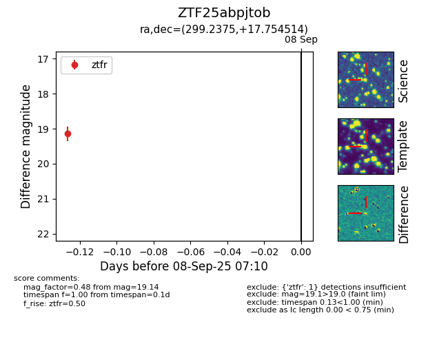

FINK: ZTF25abpjtob
Lasair: ZTF25abpjtob
ALeRCE: ZTF25abpjtob
ZTF25abpjtob (ztf,fink)
equatorial (ra, dec) = (299.2375,+17.75451)
galactic (l, b) = (56.2494,-5.73648)

last ztfr=19.14
1 ztfr detections